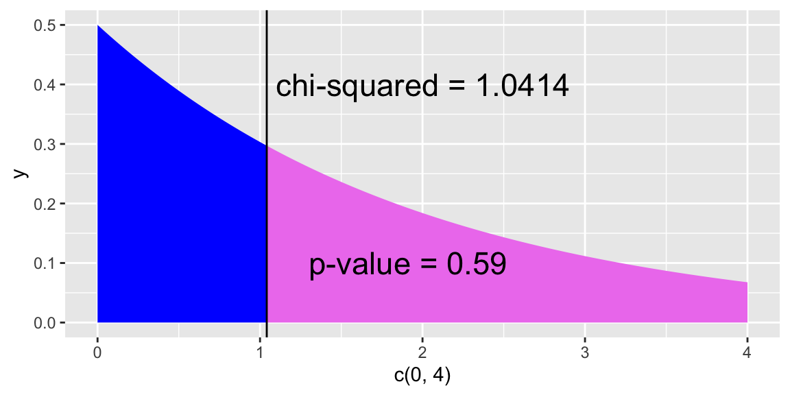
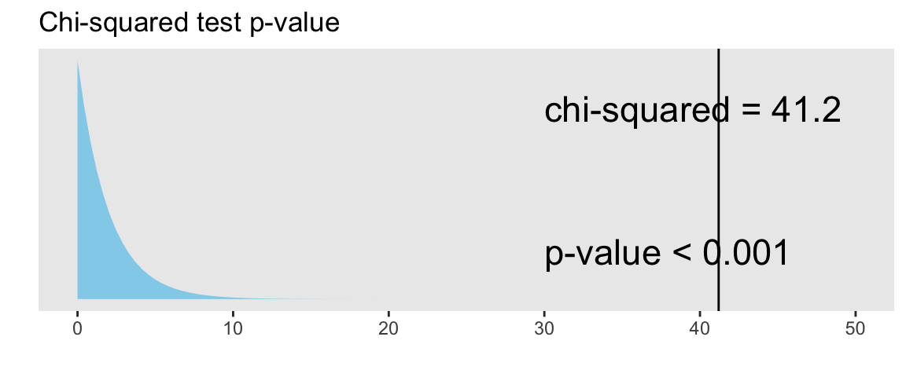

Code
# run these every time you open Rstudio
library(tidyverse)
library(oibiostat)
library(janitor)
library(rstatix)
library(knitr)
library(gtsummary)
library(moderndive)
library(gt)
library(broom)
library(here)
library(pwr) # new-ishBSTA 511/611
Meike Niederhausen, PhD
OHSU-PSU School of Public Health
November 13, 2023
Add text to a plot using annotate():
ggplot(NULL, aes(c(0,4))) + # no dataset, create axes for x from 0 to 4
geom_area(stat = "function", fun = dchisq, args = list(df=2),
fill = "blue", xlim = c(0, 1.0414)) +
geom_area(stat = "function", fun = dchisq, args = list(df=2),
fill = "violet", xlim = c(1.0414, 4)) +
geom_vline(xintercept = 1.0414) + # vertical line at x = 1.0414
annotate("text", x = 1.1, y = .4, # add text at specified (x,y) coordinate
label = "chi-squared = 1.0414", hjust=0, size=6) +
annotate("text", x = 1.3, y = .1,
label = "p-value = 0.59", hjust=0, size=6) 
chisq.test()Testing the association (independence) between two categorical variables
NHANES dataset: 10,000 rows, resampled from NHANESraw to undo oversampling effects
Depressed
PhysActive
Generic wording:
Test of “association” wording
\(H_0\): There is no association between the two variables
\(H_A\): There is an association between the two variables
Test of “independence” wording
\(H_0\): The variables are independent
\(H_A\): The variables are not independent
For our example:
Test of “association” wording
\(H_0\): There is no association between depression and physical activity
\(H_A\): There is an association between depression and physical activity
Test of “independence” wording
\(H_0\): The variables depression and physical activity are independent
\(H_A\): The variables depression and physical activity are not independent
For chi-squared test hypotheses we do not have versions using “symbols” like we do with tests of means or proportions.
Depressed and physically active (PhysActive) variables.See slides for data table.
Below is table in R.
[,1] [,2] [,3]
[1,] 199 26 1
[2,] 115 32 27 Depression
PA None Several Most
Yes 199 26 1
No 115 32 27\[P(A~and~B)=P(A)P(B)\]
\[\begin{align} P(None~and~Yes) &= P(None)P(Yes)\\ P(None~and~No) &= P(None)P(No)\\ P(Several~and~Yes) &= P(Several)P(Yes)\\ P(Several~and~No) &= P(Several)P(No)\\ P(Most~and~Yes) &= P(Most)P(Yes)\\ P(Most~and~No) &= P(Most)P(No) \end{align}\]
Depression
PA None Several Most
Yes 199 26 1
No 115 32 27\[\begin{align} P(None~and~Yes) &= \frac{314}{400}\cdot\frac{226}{400}\\ & ...\\ P(Most~and~No) &= \frac{28}{400}\cdot\frac{174}{400} \end{align}\]
With these probabilities, for each cell of the table we calculate the expected counts for each cell under the \(H_0\) hypothesis that the variables are independent
Expected count of Yes & None:
\[\begin{align} 400 \cdot & P(None~and~Yes)\\ &= 400 \cdot P(None)P(Yes)\\ &= 400 \cdot\frac{314}{400}\cdot\frac{226}{400}\\ &= \frac{314\cdot 226}{400} \\ &= 177.41\\ &= \frac{\text{column total}\cdot \text{row total}}{\text{table total}} \end{align}\]
Depression
PA None Several Most
Yes 199 26 1
No 115 32 27 Depression
PA None Several Most
Yes 199 26 1
No 115 32 27See slides for table with expected counts & calculations
Expected count for cell \(i,j\) :
\[\textrm{Expected Count}_{\textrm{row } i,\textrm{ col }j}=\frac{(\textrm{row}~i~ \textrm{total})\cdot(\textrm{column}~j~ \textrm{total})}{\textrm{table total}}\]
Test statistic for a test of association (independence):
\[\chi^2 = \sum_{\textrm{all cells}} \frac{(\textrm{observed} - \text{expected})^2}{\text{expected}}\]
Depression
PA None Several Most
Yes 199 26 1
No 115 32 27\[\begin{align} \chi^2 &= \sum\frac{(O-E)^2}{E} \\ &= \frac{(199-177.41)^2}{177.41} + \frac{(26-32.77)^2}{32.77} + \ldots + \frac{(27-12.18)^2}{12.18} \\ &= 41.2 \end{align}\]
Is this value big? Big enough to reject \(H_0\)?
The \(\chi^2\) distribution shape depends on its degrees of freedom
See slides for Chi-squared distribution figure.
pchisq function in R to calculate the probability of being at least as big as the \(\chi^2\) test statistic:What’s the conclusion to the \(\chi^2\) test?
Recall the hypotheses to our \(\chi^2\) test:
\(H_0\): There is no association between depression and being physically activity
\(H_A\): There is an association between depression and being physically activity

Conclusion:
Based a random sample of 400 US adults from 2009-2012, there is sufficient evidence that there is an association between depression and being physically activity (p-value < 0.001).
If we fail to reject, we DO NOT have evidence of no association.
Create dataset based on results table:
Summary table of data:
If only have 2 columns in the dataset:
Pearson's Chi-squared test
data: table(DepPA)
X-squared = 41.171, df = 2, p-value = 1.148e-09If have >2 columns in the dataset, we need to specify which columns to table:
Pearson's Chi-squared test
data: table(DepPA$Depression, DepPA$PA)
X-squared = 41.171, df = 2, p-value = 1.148e-09The tidyverse way (fewer parentheses)
Pearson's Chi-squared test
data: .
X-squared = 41.171, df = 2, p-value = 1.148e-09tidy() the output (from broom package):
| statistic | p.value | parameter | method |
|---|---|---|---|
| 41.17067 | 1.147897e-09 | 2 | Pearson's Chi-squared test |
Pull p-value
You can see what the observed and expected counts are from the saved chi-squared test results:
No Yes
Most 27 1
None 115 199
Several 32 26
No Yes
Most 12.18 15.82
None 136.59 177.41
Several 25.23 32.77Why is it important to look at the expected counts?
What are we looking for in the expected counts?
Create a base R table of the results:
[,1] [,2] [,3]
[1,] 199 26 1
[2,] 115 32 27 Depression
PA None Several Most
Yes 199 26 1
No 115 32 27Run \(\chi^2\) test with 2-way table:
[,1] [,2]
[1,] 199 27
[2,] 115 59 Depression
PA None Several/Most
Yes 199 27
No 115 59Output without a CC
Pearson's Chi-squared test
data: DepPA_table2x2
X-squared = 28.093, df = 1, p-value = 1.156e-07Compare to output with CC:
Use this if expected cell counts are too small
[,1] [,2] [,3]
[1,] 43 5 2
[2,] 40 4 6 Depression
PA None Several Most
Yes 43 5 2
No 40 4 6Warning in stats::chisq.test(x, y, ...): Chi-squared approximation may be
incorrect
Pearson's Chi-squared test
data: DepPA100_table
X-squared = 2.2195, df = 2, p-value = 0.3296Warning in stats::chisq.test(x, y, ...): Chi-squared approximation may be
incorrect Depression
PA None Several Most
Yes 41.5 4.5 4
No 41.5 4.5 4
Fisher's Exact Test for Count Data
data: DepPA100_table
p-value = 0.3844
alternative hypothesis: two.sidedFrom the chisq.test help file:
If there are only 2 levels in both of the categorical variables being tested, then the p-value from the \(\chi^2\) test is equal to the p-value from the differences in proportions test.
Example: Previously we tested whether the proportion who had participated in sports betting was the same for college and noncollege young adults:
\[\begin{align} H_0:& ~p_{coll} - p_{noncoll} = 0\\ H_A:& ~p_{coll} - p_{noncoll} \neq 0 \end{align}\]
Bet
Group No Yes
College 175 94
NonCollege 137 77| statistic | p.value | parameter | method |
|---|---|---|---|
| 0.01987511 | 0.8878864 | 1 | Pearson's Chi-squared test with Yates' continuity correction |
| estimate1 | estimate2 | statistic | p.value | parameter | conf.low | conf.high | method | alternative |
|---|---|---|---|---|---|---|---|---|
| 0.6505576 | 0.6401869 | 0.01987511 | 0.8878864 | 1 | -0.07973918 | 0.1004806 | 2-sample test for equality of proportions with continuity correction | two.sided |
[1] 0.8878167Running the sports betting example as a chi-squared test is actually an example of a test of homogeneity
In a test of homogeneity, proportions can be compared between many groups
\[\begin{align} H_0:&~ p_1 = p_2 = p_2 = \ldots = p_n\\ H_A:&~ p_i \neq p_j \textrm{for at least one pair of } i, j \end{align}\]
It’s an extension of a two proportions test.
The test statistic & p-value are calculated the same was as a chi-squared test of association (independence)
When we fix the margins (whether row or columns) of one of the “variables” (such as in a cohort or case-control study)
---
title: "Day 13: Chi-squared tests (Sections 8.3-8.4)"
subtitle: "BSTA 511/611"
author: "Meike Niederhausen, PhD"
institute: "OHSU-PSU School of Public Health"
date: "11/13/2023"
categories: ["Week 8"]
format:
html:
link-external-newwindow: true
toc: true
code-fold: show
code-tools: true
source: repo
html-math-method: mathjax
execute:
echo: true
freeze: auto # re-render only when source changes
# editor: visual
editor_options:
chunk_output_type: console
---
```{r}
#| label: "setup"
#| include: false
knitr::opts_chunk$set(echo = TRUE, fig.height=2.5, fig.width=6, message = F)
```
## Load packages
* Packages need to be loaded _every time_ you restart R or render an Qmd file
```{r}
# run these every time you open Rstudio
library(tidyverse)
library(oibiostat)
library(janitor)
library(rstatix)
library(knitr)
library(gtsummary)
library(moderndive)
library(gt)
library(broom)
library(here)
library(pwr) # new-ish
```
- You can check whether a package has been loaded or not
- by looking at the Packages tab and
- seeing whether it has been checked off or not
# MoRitz's tip of the day
__Add text to a plot__ using `annotate()`:
```{r}
#| fig.height: 3.0
ggplot(NULL, aes(c(0,4))) + # no dataset, create axes for x from 0 to 4
geom_area(stat = "function", fun = dchisq, args = list(df=2),
fill = "blue", xlim = c(0, 1.0414)) +
geom_area(stat = "function", fun = dchisq, args = list(df=2),
fill = "violet", xlim = c(1.0414, 4)) +
geom_vline(xintercept = 1.0414) + # vertical line at x = 1.0414
annotate("text", x = 1.1, y = .4, # add text at specified (x,y) coordinate
label = "chi-squared = 1.0414", hjust=0, size=6) +
annotate("text", x = 1.3, y = .1,
label = "p-value = 0.59", hjust=0, size=6)
```
# Where are we?
* We've covered inference for
* continuous outcomes:
* mean for one group
* mean difference of two paired groups
* difference in means of two independent groups
* binary outcomes:
* proportion for one group
* difference in proportions of two independent groups
* BSTA 513:
* inference for paired proportions (Mc Nemar's test)
<hr>
* What if we want to
* compare more than two groups?
* or have categorical outcome that has more than 2 levels?
## Goals for today (Sections 8.3-8.4)
* Statistical inference for __categorical data__ when either are
* comparing __more than two groups__ or
* have categorical outcomes that have __more than 2 levels__ or
* both
* Chi-squared tests of association (independence)
* Hypotheses
* test statistic
* Chi-squared distribution
* p-value
* technical assumptions (conditions)
* conclusion
* R: `chisq.test()`
* Fisher's Exact Test
* Chi-squared test vs. testing difference in proportions
* Test of Homogeneity
# Chi-squared tests of association (independence)
Testing the association (independence) between two categorical variables
## Is there an association between depression and being physically active?
* Data sampled from the NHANES R package:
* American National Health and Nutrition Examination Surveys
* Collected 2009-2012 by US National Center for Health Statistics (NCHS)
* `NHANES` dataset: 10,000 rows, resampled from `NHANESraw` to undo oversampling effects
* Treat it as a simple random sample from the US population (for pedagogical purposes)
* __`Depressed`__
* Self-reported _number of days where participant felt down, depressed or hopeless_.
* One of None, Several, or Most (more than half the days).
* Reported for participants aged 18 years or older.
* __`PhysActive`__
* _Participant does moderate or vigorous-intensity sports, fitness or recreational activities_ (Yes or No).
* Reported for participants 12 years or older.
## Hypotheses for a Chi-squared test of association (independence)
__Generic wording:__
Test of "__association__" wording
- $H_0$: There is no association between the two variables
- $H_A$: There is an association between the two variables
Test of "__independence__" wording
- $H_0$: The variables are independent
- $H_A$: The variables are not independent
__For our example:__
Test of "__association__" wording
- $H_0$: There is no association between depression and physical activity
- $H_A$: There is an association between depression and physical activity
Test of "__independence__" wording
- $H_0$: The variables depression and physical activity are independent
- $H_A$: The variables depression and physical activity are not independent
::: {.callout-warning icon=false}
## No symbols
For chi-squared test hypotheses we do not have versions using "symbols" like we do with tests of means or proportions.
:::
## Data from NHANES
* Results below are from
* a random sample of 400 adults (≥ 18 yrs old)
* with data for both the depression `Depressed` and physically active (`PhysActive`) variables.
See slides for data table.
Below is table in R.
```{r}
(DepPA_table <- matrix(c(199, 26, 1, 115, 32, 27), nrow = 2, ncol = 3, byrow = T))
dimnames(DepPA_table) <- list("PA" = c("Yes", "No"), # row names
"Depression" = c("None", "Several", "Most")) # column names
DepPA_table
```
* What does it mean for the variables to be independent?
## $H_0$: Variables are Independent
* Recall from Chapter 2, that events $A$ and $B$ are independent if and only if
$$P(A~and~B)=P(A)P(B)$$
* If depression and being physically active are independent variables, then _theoretically_ this condition needs to hold for every combination of levels, i.e.
\begin{align}
P(None~and~Yes) &= P(None)P(Yes)\\
P(None~and~No) &= P(None)P(No)\\
P(Several~and~Yes) &= P(Several)P(Yes)\\
P(Several~and~No) &= P(Several)P(No)\\
P(Most~and~Yes) &= P(Most)P(Yes)\\
P(Most~and~No) &= P(Most)P(No)
\end{align}
```{r}
# See slides for data table.
DepPA_table
```
\begin{align}
P(None~and~Yes) &= \frac{314}{400}\cdot\frac{226}{400}\\
& ...\\
P(Most~and~No) &= \frac{28}{400}\cdot\frac{174}{400}
\end{align}
With these probabilities, for each cell of the table
we calculate the __expected__ counts for each cell under the $H_0$ hypothesis that the variables are independent
## Expected counts (if variables are independent)
+ The expected counts (if $H_0$ is true & the variables are independent) for each cell are
+ $np$ = total table size $\cdot$ probability of cell
Expected count of Yes & None:
\begin{align}
400 \cdot & P(None~and~Yes)\\
&= 400 \cdot P(None)P(Yes)\\
&= 400 \cdot\frac{314}{400}\cdot\frac{226}{400}\\
&= \frac{314\cdot 226}{400} \\
&= 177.41\\
&= \frac{\text{column total}\cdot \text{row total}}{\text{table total}}
\end{align}
```{r}
# See slides for data table.
DepPA_table
```
* If depression and being physically active are __independent__ variables
* (as assumed by $H_0$),
* then the __observed counts should be close to the expected counts__ for each cell of the table
## Observed vs. Expected counts
* The __observed__ counts are the counts in the 2-way table summarizing the data
```{r}
# See slides for data table.
DepPA_table
```
* The __expected__ counts are the counts the we would expect to see in the 2-way table if there was no association between depression and being physically activity
__See slides for table with expected counts & calculations__
Expected count for cell $i,j$ :
$$\textrm{Expected Count}_{\textrm{row } i,\textrm{ col }j}=\frac{(\textrm{row}~i~ \textrm{total})\cdot(\textrm{column}~j~ \textrm{total})}{\textrm{table total}}$$
## The $\chi^2$ test statistic
Test statistic for a test of association (independence):
$$\chi^2 = \sum_{\textrm{all cells}} \frac{(\textrm{observed} - \text{expected})^2}{\text{expected}}$$
* When the variables are independent, the observed and expected counts should be close to each other
```{r}
# See slides for data table with expected counts.
DepPA_table
```
<hr>
\begin{align}
\chi^2 &= \sum\frac{(O-E)^2}{E} \\
&= \frac{(199-177.41)^2}{177.41} + \frac{(26-32.77)^2}{32.77} + \ldots + \frac{(27-12.18)^2}{12.18} \\
&= 41.2
\end{align}
Is this value big? Big enough to reject $H_0$?
## The $\chi^2$ distribution & calculating the _p_-value
The $\chi^2$ distribution shape depends on its degrees of freedom
* It's skewed right for smaller df,
* gets more symmetric for larger df
* __[df = (# rows-1) x (# columns-1)]{style="color:green"}__
_See slides for Chi-squared distribution figure._
* The __[p-value]{style="color:darkorange"}__ is always the __[area to the right]{style="color:darkorange"}__ of the test statistic for a $\chi^2$ test.
* We can use the `pchisq` function in R to calculate the probability of being at least as big as the $\chi^2$ test statistic:
```{r}
pv <- pchisq(41.2, df = 2, lower.tail = FALSE)
pv
```
What's the conclusion to the $\chi^2$ test?
## Conclusion
Recall the hypotheses to our $\chi^2$ test:
- $H_0$: There is __no association__ between depression and being physically activity
- $H_A$: There is __an association__ between depression and being physically activity
```{r}
#| echo: false
ggplot(NULL, aes(c(0,50))) + # no dataset, create axes for x from 0 to 50
# Draw & fill in chi-squared distribution from 0 to 41.2 (test stat value)
geom_area(stat = "function", fun = dchisq, args = list(df=2),fill = "skyblue", alpha =0.9, xlim = c(0, 41.2)) +
# Draw & fill in chi-squared distribution from 41.2 to 50
geom_area(stat = "function", fun = dchisq, args = list(df=2),fill = "violet", alpha =0.4, xlim = c(41.2, 50)) +
labs(x = "", y = "", title="Chi-squared test p-value") +
scale_y_continuous(breaks = NULL) +
scale_x_continuous(breaks = seq(0, 50, by=10)) + # x-axis tick marks: 0,10,20,...,50
geom_vline(xintercept = 41.2) + # vertical line at x = 41.2 (test stat)
annotate("text", x = 30, y = .4, # add text at specified (x,y) coordinate
# label is text that will appear
label = "chi-squared = 41.2", hjust=0, size=6) +
annotate("text", x = 30, y = .1, label = "p-value < 0.001", hjust=0, size=6) +
theme(panel.grid.major = element_blank(), # remove the major grid lines
panel.grid.minor = element_blank()) # remove the minor grid lines
```
__Conclusion:__
Based a random sample of 400 US adults from 2009-2012, there is sufficient evidence that there is an association between depression and being physically activity (_p_-value < 0.001).
::: {.callout-warning}
If we fail to reject, we DO NOT have evidence of no association.
:::
## Technical conditions
* __Independence__
* Each case (person) that contributes a count to the table must be independent of all the other cases in the table
* In particular, observational units cannot be represented in more than one cell.
* For example, someone cannot choose both "Several" and "Most" for depression status. They have to choose exactly one option for each variable.
<hr>
* __Sample size__
* In order for the test statistic to be modeled by a chi-squared distribution we need
* __[ 2 $\times$ 2 table:]{style="color:darkorange"} expected counts are at least 10 for each cell__
* __[larger tables: ]{style="color:darkorange"}__
* __no more than 1/5 of the expected counts are less than 5__, and
* __all expected counts are greater than 1__
# Chi-squared tests in R
## Depression vs. physical activity dataset
Create dataset based on results table:
```{r}
DepPA <- tibble(
Depression = c(rep("None", 314),
rep("Several", 58),
rep("Most", 28)),
PA = c(rep("Yes", 199), # None
rep("No", 115),
rep("Yes", 26), # Several
rep("No", 32),
rep("Yes", 1), # Most
rep("No", 27))
)
```
Summary table of data:
```{r}
DepPA %>% tabyl(Depression, PA)
# base R:
table(DepPA)
```
## $\chi^2$ test in R using dataset
If only have [2 columns]{style="color:green"} in the dataset:
```{r}
(ChisqTest_DepPA <-
chisq.test(table(DepPA)))
```
If have [>2 columns]{style="color:green"} in the dataset, we need to specify which columns to table:
```{r}
(ChisqTest_DepPA <-
chisq.test(table(
DepPA$Depression, DepPA$PA)))
```
The tidyverse way (fewer parentheses)
```{r}
table(DepPA$Depression, DepPA$PA) %>%
chisq.test()
```
`tidy()` the output (from `broom` package):
```{r}
table(DepPA$Depression, DepPA$PA) %>%
chisq.test() %>%
tidy() %>% gt()
```
Pull _p_-value
```{r}
table(DepPA$Depression, DepPA$PA) %>%
chisq.test() %>%
tidy() %>% pull(p.value)
```
## Observed & expected counts in R
You can see what the __observed__ and __expected__ counts are from the saved chi-squared test results:
```{r}
ChisqTest_DepPA$observed
ChisqTest_DepPA$expected
```
* Why is it important to look at the expected counts?
* What are we looking for in the expected counts?
## $\chi^2$ test in R with 2-way table
Create a base R table of the results:
```{r}
(DepPA_table <- matrix(c(199, 26, 1, 115, 32, 27), nrow = 2, ncol = 3, byrow = T))
dimnames(DepPA_table) <- list("PA" = c("Yes", "No"), # row names
"Depression" = c("None", "Several", "Most")) # column names
DepPA_table
```
Run $\chi^2$ test with 2-way table:
```{r}
chisq.test(DepPA_table)
chisq.test(DepPA_table)$expected
```
## (Yates') Continuity correction
* For a __2x2__ contingency table,
* the $\chi^2$ test has the option of including a continuity correction
* just like with the proportions test
* The __default includes a continuity correction__
* There is no CC for bigger tables
```{r}
(DepPA_table2x2 <- matrix(c(199, 27, 115, 59), nrow = 2, ncol = 2, byrow = T))
dimnames(DepPA_table2x2) <- list("PA" = c("Yes", "No"), # row names
"Depression" = c("None", "Several/Most")) # column names
DepPA_table2x2
```
Output __without a CC__
```{r}
chisq.test(DepPA_table2x2, correct = FALSE)
```
Compare to output __with CC__:
```{r}
chisq.test(DepPA_table2x2)
```
# Fischer's Exact Test
Use this if expected cell counts are too small
## Example with smaller sample size
* Suppose that instead of taking a random sample of 400 adults (from the NHANES data), a study takes a random sample of 100 such that
* 50 people that are physically active and
* 50 people that are not physically active
```{r}
(DepPA100_table <- matrix(c(43, 5, 2, 40, 4, 6), nrow = 2, ncol = 3, byrow = T))
dimnames(DepPA100_table) <- list("PA" = c("Yes", "No"), # row names
"Depression" = c("None", "Several", "Most")) # column names
DepPA100_table
```
## Chi-squared test warning
```{r}
#| warning: true
chisq.test(DepPA100_table)
chisq.test(DepPA100_table)$expected
```
* Recall the __sample size__ condition
* In order for the test statistic to be modeled by a chi-squared distribution we need
* __[ 2 $\times$ 2 table:]{style="color:darkorange"} expected counts are at least 10 for each cell__
* __[larger tables: ]{style="color:darkorange"}__
* __no more than 1/5 of the expected counts are less than 5__, and
* __all expected counts are greater than 1__
## Fisher's Exact Test
* Called an exact test since it
* calculates an exact probability for the p-value
* instead of using an asymptotic approximation, such as the normal, t, or chi-squared distributions
* For 2x2 tables the p-value is calculated using the __hypergeometric__ probability distribution (see book for details)
```{r}
fisher.test(DepPA100_table)
```
::: {.callout-caution icon=false}
## Comments
* Note that there is no test statistic
* There is also no CI
* This is always a two-sided test
:::
## __Simulate p-values__: another option for small expected counts
From the `chisq.test` help file:
* Simulation is done by random sampling from the set of all contingency tables with the same margin totals
* works only if the margin totals are strictly positive.
* For each simulation, a $\chi^2$ test statistic is calculated
* _P_-value is the proportion of simulations that have a test statistic at least as big as the observed one.
* No continuity correction
```{r}
set.seed(567)
chisq.test(DepPA100_table, simulate.p.value = TRUE)
```
# $\chi^2$ test vs. testing proportions
## $\chi^2$ test vs. testing differences in proportions
If there are only 2 levels in both of the categorical variables being tested, then the _p_-value from the $\chi^2$ test is equal to the _p_-value from the differences in proportions test.
__Example:__ Previously we tested whether the proportion who had participated in sports betting was the same for college and noncollege young adults:
\begin{align}
H_0:& ~p_{coll} - p_{noncoll} = 0\\
H_A:& ~p_{coll} - p_{noncoll} \neq 0
\end{align}
```{r}
SportsBet_table <- matrix(
c(175, 94, 137, 77),
nrow = 2, ncol = 2, byrow = T)
dimnames(SportsBet_table) <- list(
"Group" = c("College", "NonCollege"), # row names
"Bet" = c("No", "Yes")) # column names
SportsBet_table
```
```{r}
chisq.test(SportsBet_table) %>% tidy() %>% gt()
prop.test(SportsBet_table) %>% tidy() %>% gt()
2*pnorm(sqrt(0.0199), lower.tail=F) # p-value
```
## Test of Homogeneity
* Running the sports betting example as a chi-squared test is actually an example of a __test of homogeneity__
* In a test of homogeneity, proportions can be compared between many groups
\begin{align}
H_0:&~ p_1 = p_2 = p_2 = \ldots = p_n\\
H_A:&~ p_i \neq p_j \textrm{for at least one pair of } i, j
\end{align}
* It's an extension of a two proportions test.
* The test statistic & p-value are calculated the same was as a chi-squared test of association (independence)
* When we fix the margins (whether row or columns) of one of the "variables" (such as in a cohort or case-control study)
* the chi-squared test is called a __Test of Homogeneity__
## Chi-squared Tests of Independence vs. Homogeneity vs. Goodness-of-fit
* See YouTube video from TileStats for a good explanation of how these three tests are different: <https://www.youtube.com/watch?v=TyD-_1JUhxw>
* UCLA's INSPIRE website has a good summary too: <http://inspire.stat.ucla.edu/unit_13/>